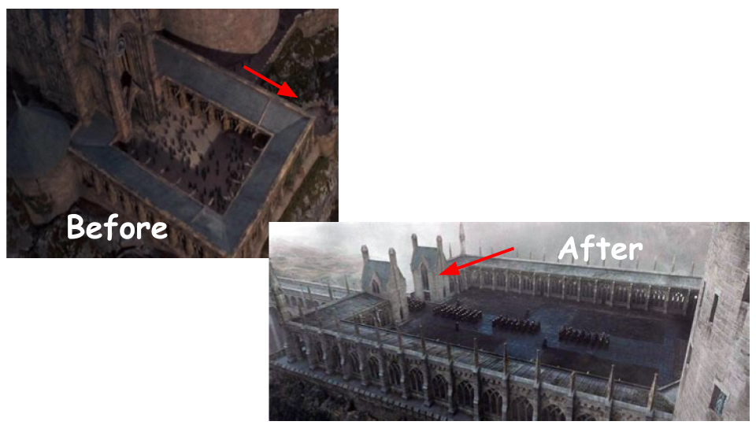

Deathly Hallows
Harry Potter and the Deathly Hallows Part 2 is the last movie where we can find changes throughout Hogwarts Castle. It also uses a CGI model instead of a physical model for the first time in the series. This is also the version that appears in the Fantastic Beasts movies The Crimes of Grindelwald and The Secrets of Dumbledore.
The first notable change to discuss can be seen in the picture below. The Viaduct Courtyard is enlarged likely due to the fact that it is used here more than the other movies. It can also be noted that the location of where the viaduct bridge starts has changed. In the "before" picture, the viaduct bridge starts at the corner of the courtyard. Now, it starts at the center. In addition to this, two gatehouses were added at the entrance of the viaduct.
We can also see another change with the Viaduct in this movie. Instead of connecting the Viaduct Courtyard with the Viaduct Entrance, the viaduct connects the courtyard with some hills near of the castle, acting as another entrance to the school. The green arrow in the "after" picture points to where the viaduct used to connect, and the red arrow points to where it connects to now. I believe this change was made was due to the fact that Voldemort and the Death Eaters needed to make a more notable entrance to get into Hogwarts. They could have taken the wooden bridge in the back of the school, but the villains entering the back of the school is not as dramatic or cool as them entering through the front.
Right by the new Viaduct, the building connecting the Great Hall to the Grand Staircase Tower was significantly shortened.
Next, we can see that Filch's office has been slightly relocated. The small tower-like building, where it is located, has been moved towards the back of the Great Hall from its original location closer to the Viaduct Courtyard. It was probably moved due to the fact that the courtyard was enlarged.

Continuing with the Great Hall, we can see the building connecting the Great Hall to the Grand Staircase Tower was made several stories shorter.
Another change was that the Training Grounds were removed. I brightened the "after" image from its original appearance in the movie to make the change a little more visible.
We can next see many changes to the front side of the Quad. Shown in the red circle, the Lookout Tower was made taller and to resemble the Astronomy Tower. We can also see the towers on top of the roof change, shown in the yellow circle. Finally, in the green circle, we can see new windows added.
The last change to occur to the exterior in this movie is the redesign of the Boathouse. This also marks the first time the inside of it was shown in the movies; this could relate to why the filmmakers changed it.
There are a couple of notable changes to the interior of the school. One is that the entrance hall had stone statues added. These statues were added to act as defenders of the school during the Battle of Hogwarts.
The final change to the castle in this movie is the redesign of the iconic Grand Staircase. The moving stairs were replaced with stationary ones.